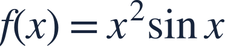
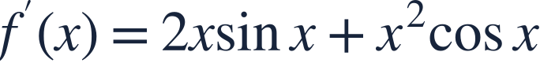
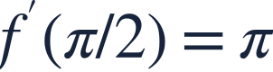
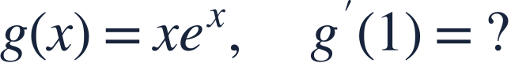

The product rule
곱의 법칙

A product changes because either factor can change.
곱은 두 인수 중 어느 쪽이 변해도 달라집니다.

A product changes because either factor can change.
곱은 두 인수 중 어느 쪽이 변해도 달라집니다.
Identify two factors before choosing a differentiation rule.
미분법을 고르기 전에 두 인수를 찾으세요.

The product rule keeps one factor while differentiating the other, then adds both contributions.
한 인수를 유지하고 다른 인수를 미분한 두 기여를 더합니다.
Differentiate the two factors separately first.
먼저 두 인수를 따로 미분합니다.

Write both product-rule terms.
곱의 미분법에서 생기는 두 항을 모두 씁니다.

At π/2, sine is 1 and cosine is 0.
π/2에서 사인은 1, 코사인은 0입니다.
Multiplying the two derivatives is not the derivative of a product.
두 도함수를 곱하는 것은 곱의 미분법이 아닙니다.

Keep both contributions before substituting.
두 기여를 모두 쓴 뒤 대입하세요.